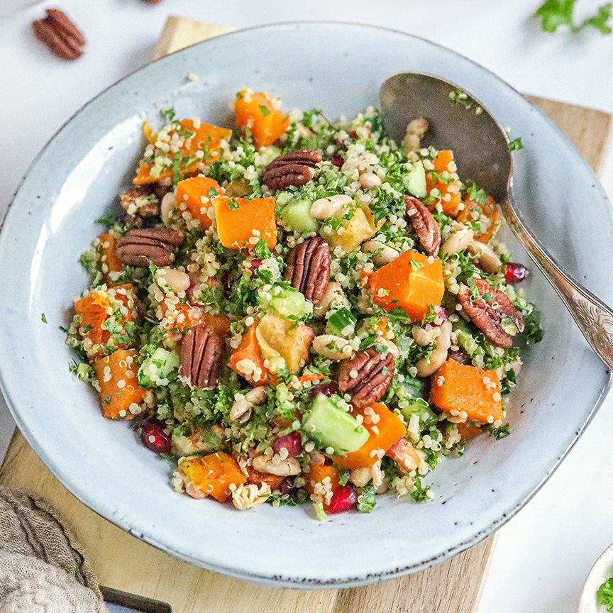

Ingrediënten:
150g quinoa
1 flespompoen
1 appel
1 komkommer
1 granaatappel
40g pecannoten
150g boerenkool
Voedingswaarde:
Energie 480 kcal
Vet 40,4g
Koolhydraten 23g
Waarvan suikers 20g
Vezels 70g
Eiwit 30,1g
Zout 1,89g
Berijdingswijze:
1.Verwarm de oven voor op 180 graden.
2.Zet een steelpan op het vuur. Kook de quinoa volgens de bereidingswijze op de verpakking en zet daarna opzij.
3.Schil de flespompoen en snijd in blokjes. Snijd ook de appel in blokjes en spoel de cannelini bonen goed af..
4.Verdeel de pompoen, appel en cannelini bonen over de bakplaat en besprenkel met olijfolie.
5.Zet de bakplaat in de oven en bak 35-40 minuten of tot de pompoen zacht is.
6.Snijd de komkommer in blokjes en haal de granaatappelpitjes eruit.
Quinoa-salade